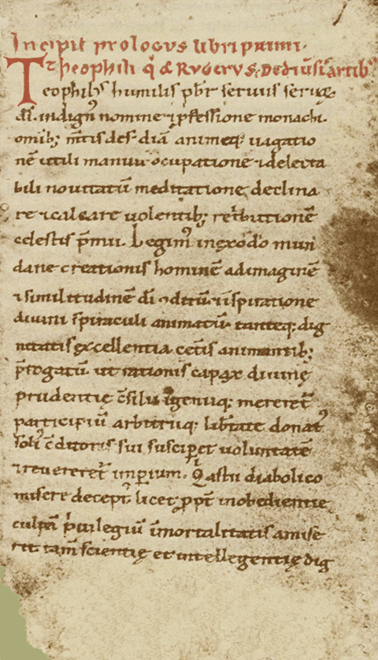
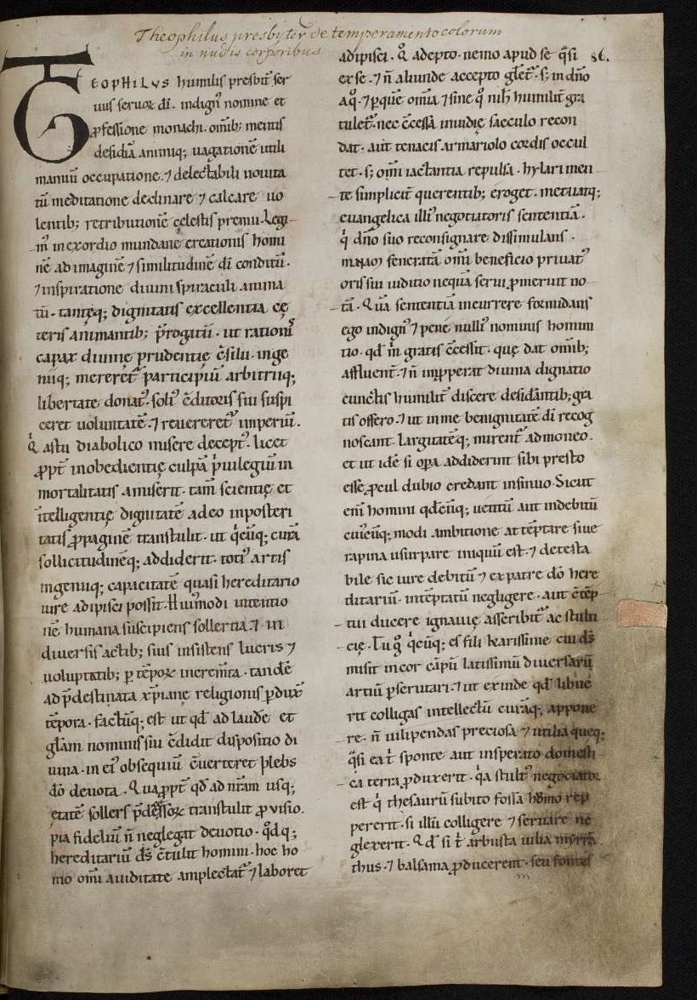
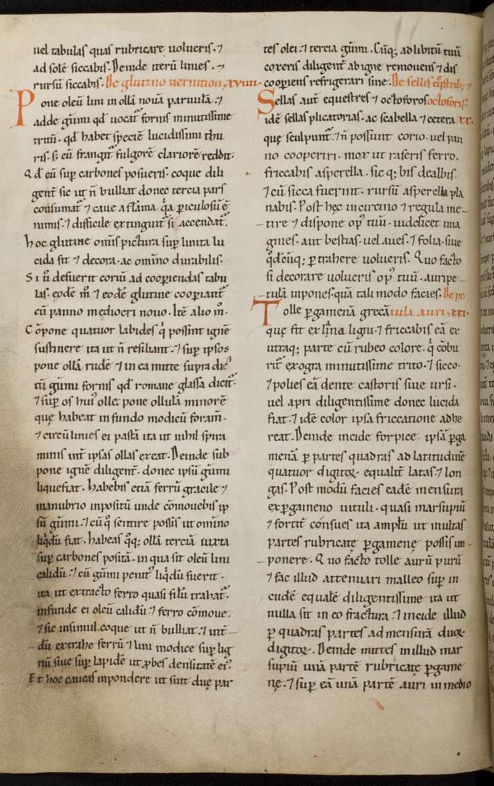
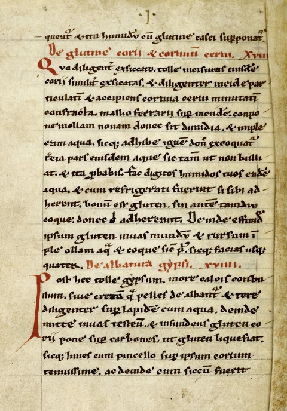
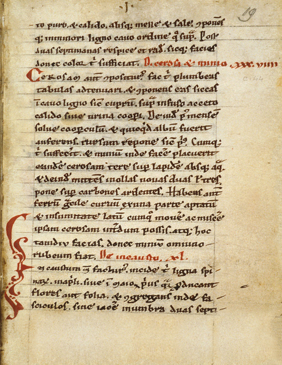
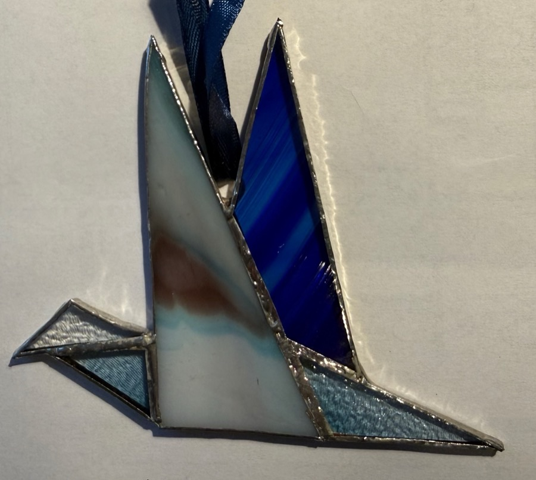
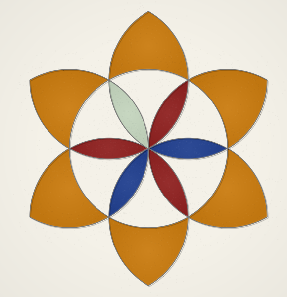
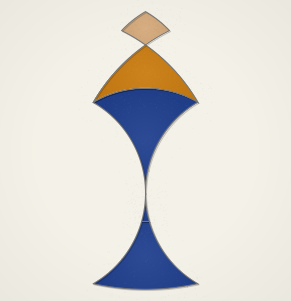

Stained Glass Circles
~11,120 after the ice, or 1120.





About nine hundred years ago a man who called himself Theophilus wrote a book on how to make almost anything. The book explained how to make paint, and the brushes to paint with, how to cast a church bell, how to make glue out of cheese, and how to build an organ pipe out of a sheet of copper so thin that a fingernail mark on one side would be seen on the other.
He also described how to make a stained glass window.
Stained glass windows begin with a design. That makes sense. Before you cut any glass, you have to know exactly what shapes to cut and exactly how they will fit together.
Theophilus recommended starting with a flat piece of wood a little larger than you want the window to be. Then you wet the board with water and rub chalk all over it until the wood is covered with a perfectly smooth, white chalky surface. When that mixture dries, you'll have a smooth white surface on which you can draw clear lines and circles using a sharpened piece of lead.
One of the advantages of a chalk covered board is that it has a built-in eraser. If you change your mind or want to correct something, you just rub the old marks out and start over.
To make the design, Theophilus used two tools. He had a straight piece of wood or metal, called a “straight edge” for lines. To make circles, he used a compass.
As you'll see, you can make amazing designs with just circles, so we'll start with those.
Once the design is finished, the next step is to cut the brilliantly colored glass into pieces that fit each shape of his design exactly. More than a thousand years ago, making colored glass was a serious challenge. In fact, there were usually only about seven to choose from.
They could use clear glass, though at the time it was a pale green. That's because glass is made by melting sand with wood ash, and no matter where they got their sand, it always had tiny amounts of iron in it, and iron turns glass pale green. They could also make glass that was white, blue, green, red, purple, and an amber shade of yellow.
Once the glass has been cut and laid out on the chalk covered board, the next step was to use long thin strips of lead to attach the pieces.
These strips are called “came.” They are about a centimeter in diameter and have a groove down each side so if you cut one the end would be shaped roughly like the letter “H”. The edges of each piece of glass fit in those grooves.


You can see what that looks like.


For your design, all you need are circles. That may sound like a handicap but it isn't. Circles are powerful tools. You can make amazing things with them.
Your board is below. A good way to get a feel for this is to see examples. If you tap one of the names under the word “Demo” on the left, you'll see examples and how they were made.
Here is how it works. When you start, you'll see two small copper dots labeled 0 and 1. To make your first circle, tap 0 and drag to 1. You'll hear a quiet sound and see the circle centered on 0 with its edge through 1.
Then do the same thing but drag from 1 to 0. The result will be a second circle.
Here is the important thing: whenever circles cross each other, new copper colored dots appear. These mark locations you can use, along with the ones marked 0 and 1 to make new circles.
You can zoom and pan the workspace. Use pinch to zoom. Click and drag to pan.
Give it a try.
If you make all the circles possible with 0, 1, and the two new ones, you can find 10 new locations, each marked with a copper dot. That gives you a total of 14 locations you can use.
If you make all the circles possible with those 14 locations, you'll have 6,548 locations. And if you make all the circles possible with those, you'll have identified about 300,000,000,000,000 new locations, all of which can be used for still more circles. I should say, that number is very approximate, but when numbers get that big, accuracy doesn't mean that much.
The important thing is this: when you are using circles by themselves, the number of possible designs becomes enormous very quickly. Using circles alone, you will never run out of possibilities.
Theophilus’s World
References
Theophilus, On Divers Arts (De diversis artibus), about 1120. Book II is the glass book; chapter 17 is the whitewashed board, and the chapters after it the lead. Translated by John G. Hawthorne and Cyril Stanley Smith, and in print cheaply.
The Five Sisters window, York Minster, about 1250: the photograph is Stch2022’s, on Wikimedia Commons, CC0.